Qualitative Results on GTA5→{Cityscapes, BDD100K, Mapillary}
Input
Rein [Wei 2024]
Ours
Ground Truth
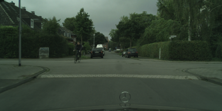
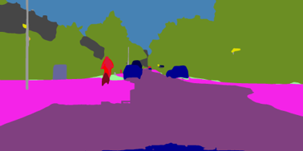
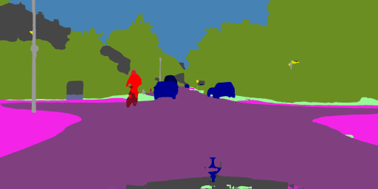
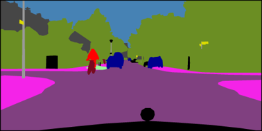
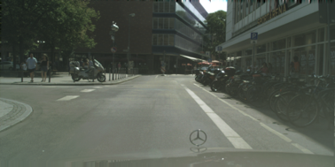
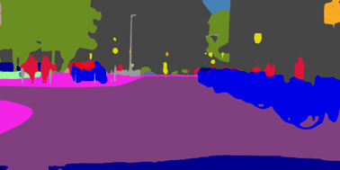
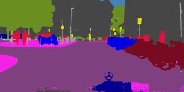
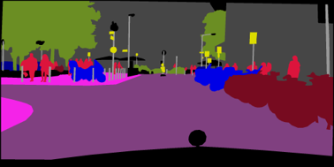
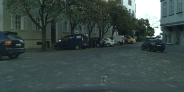
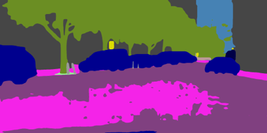
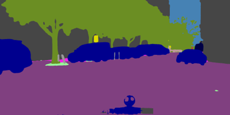
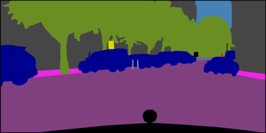
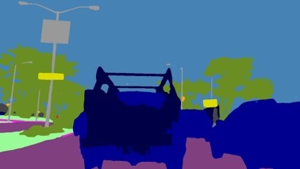

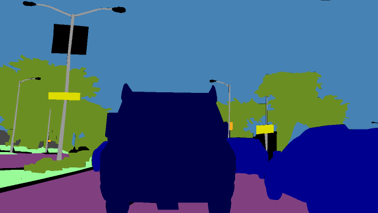
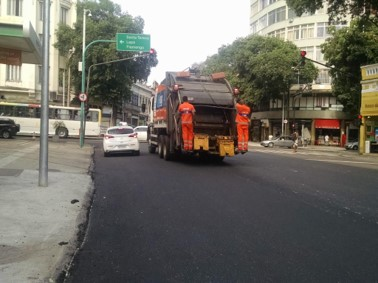
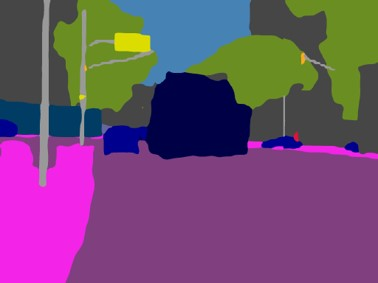
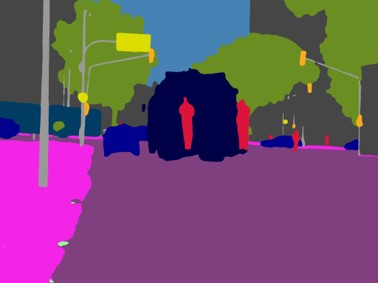
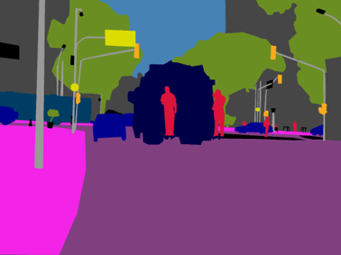
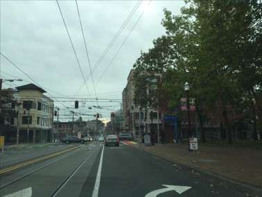
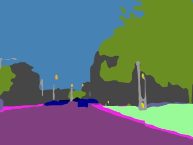
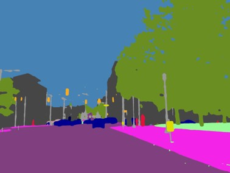
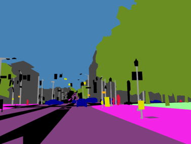
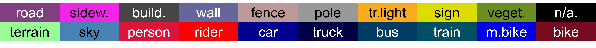
Qualitative Results under Extreme Domain Shifts (trained on GTA5)
Input
Rein [Wei 2024]
Ours
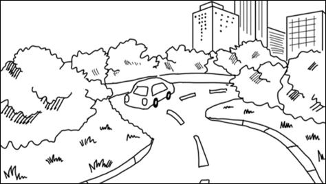
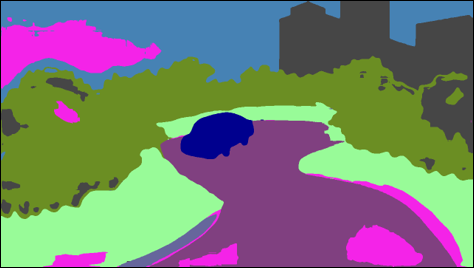
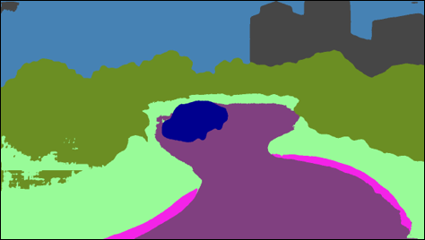
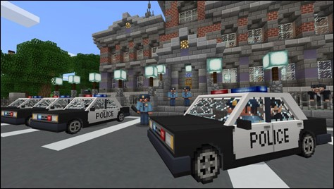
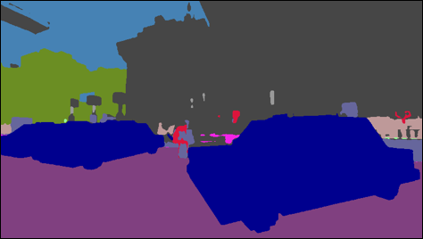
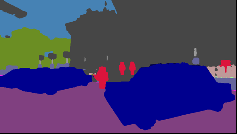
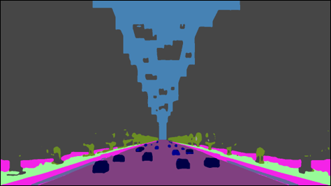
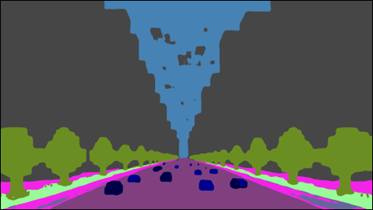